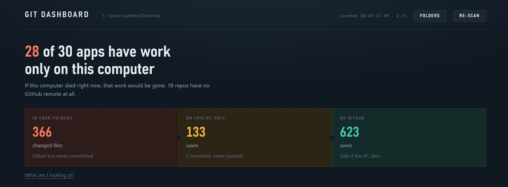

Loose Ends reads every project folder on your machine and lays out, on a single page, what you have saved, what you have pushed, and what would go with the laptop. It only ever reads. It has no commit button and no network access.

Every project, sorted so the work most likely to be lost is at the top. This is the part that tends to be a surprise.
| Project | Saves | Where they live |
|---|
Loose Ends does not care how the code got there. It shows you which work still exists on only one machine.
You do not need to understand git to know you do not want to lose a week of work. If you are shipping a lot of code and the git part is still hazy, this matters more to you than it does to someone who has been pushing to remotes for ten years.
Every project sits at one of three stages. The first two exist on exactly one computer — yours. Loose Ends shows you which projects are stuck where.
It searches inside subfolders, not just the top level. On the scan above that turned up nine repos the author did not know were unbacked-up.
It watches your folders and updates on its own. Commit or push, and the page corrects itself a moment later.
The tray icon turns amber when work is sitting on your machine alone, so you find out without going looking.
Counts come from what your computer last learned about GitHub. Each project says when that was, rather than pretending to be live.
Not "should not" — there is no code that could. These are every git command in the entire application:
git status --porcelain --branch git for-each-ref git rev-list --count git config --get remote.origin.url
No commit, push, pull, checkout, add, reset or clean anywhere in the codebase, and
no network access at all. Every call passes --no-optional-locks, so it
will not fight VS Code or GitHub Desktop for a lock. The worst a bug could do is
show you a wrong number.
It works, it is in daily use, and it is not something you can buy today. Leave an email address and you will hear once — when it is ready.